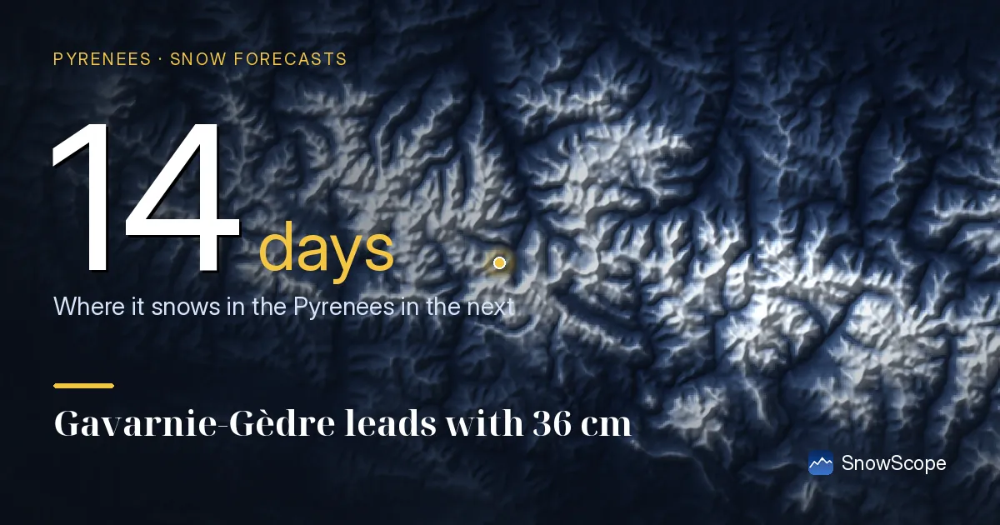

Where it snows in the Pyrenees in the next 14 days: Gavarnie-Gèdre leads with 36 cm
The Pyrenees will see most of their snow arrive by mid-November, with the mountains above 2,500 m picking up around 26 cm over the next 14 days. Gavarnie-Gèdre will fare best among the resorts tracked, accumulating about 36 cm (the two global forecasts range from 15 cm to 57 cm), split between a heavy first week and quieter days after.
See the live snow forecast for Gavarnie-Gèdre in the SnowScope appSnow depth, powder alerts and the 3D map, free.
Which resorts gain the most snow
Gavarnie-Gèdre takes the lead with roughly 36 cm over the fortnight: 31 cm lands in the first week and 5 cm trickles in during week two. Its biggest day is 19 November, when about 10 cm is forecast.
Piau-Engaly follows with around 30 cm total (25 cm in week one, 5 cm in week two), peaking on 19 November at 8 cm. Cauterets Cirque du Lys and Boí Taüll both receive approximately 24 cm, while Panticosa and Gourette see 21 cm and 20 cm respectively. All six resorts concentrate their snow in the first seven days.
| Resort | Snow depth | New snow, 72 h | Coming, next days | Top |
|---|---|---|---|---|
| Gavarnie-Gèdre | 2 cm | 2 cm | 22 cm | 2,283 m |
| Piau-Engaly | 7 cm | 16 cm | 29 cm | 2,527 m |
| Boí Taüll | 2 cm | 4 cm | 16 cm | 2,747 m |
| Cauterets Cirque du Lys | 11 cm | 6 cm | 33 cm | 2,420 m |
| Panticosa | 0 cm | 0 cm | 15 cm | 2,202 m |
| Gourette | 4 cm | 5 cm | 25 cm | 2,453 m |

When the snow falls: a front-loaded pattern
Two-thirds of the region's total snow arrives by the end of the first week. Thursday 19 November is the standout day: across the 53 resorts surveyed, 17 will record 5 cm or more, with Gavarnie-Gèdre reaching 10 cm. After that date, fresh snow tapers dramatically.
The second week (20–26 November) contributes less than a third of the fortnight's total. Expect occasional light falls rather than the accumulation of the opening days.

Snow depth by elevation
Height matters sharply. Below 1,500 m, little or no snow is forecast. Between 1,500 m and 2,000 m, the median is around 1 cm, rising to 3 cm in the snowier areas of that band. Between 2,000 m and 2,500 m, the typical forecast is 12 cm, with the best-hit zones reaching 20 cm or more.
Above 2,500 m is where the snow accumulates most: a typical forecast of 26 cm, with the snowiest quarter of that band seeing 38 cm or more. Across the entire Pyrenees region, about 1,369 km² of terrain will receive 20 cm or more over the two weeks; roughly 121 km² will exceed 50 cm.

Uncertainty and what it means
The two forecasts agree on the main pattern but diverge on amounts. For Gavarnie-Gèdre, one predicts 15 cm and the other 57 cm—a wide spread that reflects genuine forecast uncertainty beyond two weeks. The trend (heavy first week, lighter second week) is robust; individual daily totals are less certain.
Forecasts can shift with each update, especially as day 8 and beyond approach. The maps are redrawn every morning, so check again the day before you travel.
Reading the maps and planning your trip
The two-week map shows total accumulation across the entire period in one colour scale (light green for dusting, deep blue and purple for 50+ cm). The first-week and second-week maps split the same picture, letting you see where the action is concentrated.
Use the first-week map to pick your dates; the second-week map is a guide to which regions might receive bonus snow but should not drive your timing. Remember that the 0 °C level (the rain–snow boundary) can shift by several hundred metres, changing where precipitation falls as snow rather than rain—check the map again the day before you leave.
Tips for skiers
- Target 13–19 November for the best snow-to-day ratio; focus on elevations above 2,000 m where most snow will lie.
- If the forecast shifts significantly before you go, the first week's pattern is more reliable than the second week's; plan accordingly.
- Before any off-piste or touring, consult the official avalanche bulletin (links available on resort websites).
- The snow map shows terrain; it does not confirm whether a resort is open. Check lift and slope status on each resort's website before you travel.
- Early-season snow at lower elevations may be thin or patchy; rocks can be close to the surface. Ski conservatively on slopes below 2,000 m.
About these numbers
Resort snow depths are the deepest snow on the resort's upper slopes on the date shown; they are estimates for an area, not a measurement at one point. Forecasts can change. Always read the official avalanche bulletin before going off-piste.
Official avalanche bulletins: Météo-France / Meteocat / AEMET
Cite this report
For research, teaching or the press: the numbers and charts are free to reuse under CC BY 4.0 with this citation.
SnowScope (2026), Where it snows in the Pyrenees in the next 14 days: Gavarnie-Gèdre leads with 36 cm, https://snowscope.app/blog/en/2026/11/pyrenees-2-week-snow-forecast-maps-12-november-2026.html, accessed 2026-11-12
SnowScope (Atlas Labs). (2026, November 12). Where it snows in the Pyrenees in the next 14 days: Gavarnie-Gèdre leads with 36 cm. SnowScope snow reports. https://snowscope.app/blog/en/2026/11/pyrenees-2-week-snow-forecast-maps-12-november-2026.html
BibTeX
@misc{snowscope2026pyrenees2weeksnowforecas,
author = {{SnowScope (Atlas Labs)}},
title = {Where it snows in the Pyrenees in the next 14 days: Gavarnie-Gèdre leads with 36 cm},
year = {2026},
month = nov,
howpublished = {\url{https://snowscope.app/blog/en/2026/11/pyrenees-2-week-snow-forecast-maps-12-november-2026.html}},
note = {Published 2026-11-12 18:27 UTC; accessed 2026-11-12}
}· CC BY 4.0 · Methods, data and tools →
Gavarnie-Gèdre: snow and temperature by height, this winter vs last (tools) →
Follow Gavarnie-Gèdre
Free: a message when fresh snow is coming, and the forecast every morning.
More snow reports

Cauterets offers 25 km of runs for 46 EUR, but our snow history shows that the best chance for cover is the last week of December.

Gourette and Cauterets side by side: heights, usual snow by month, the best weeks and how to get there, from 46 past winters.

Cauterets Cirque du Lys leads the Pyrenees with 24 cm at the top on 22 November. Heavy snow forecast for 25 November will push coverage from 44 to 51 resorts.